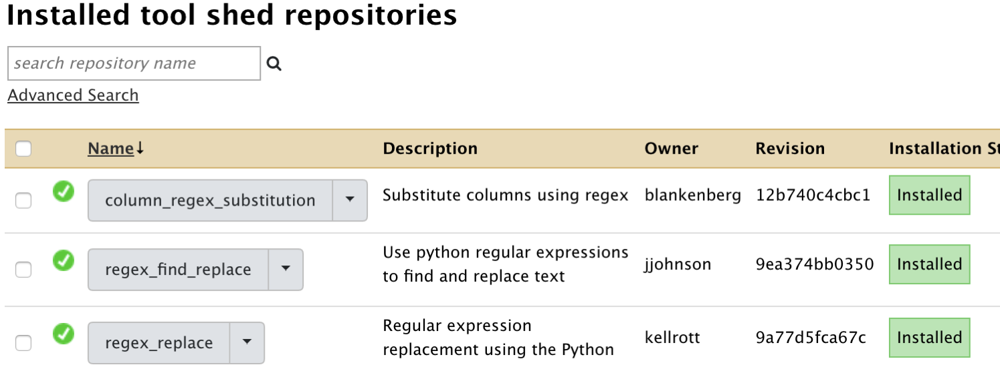

Running a workflow in Galaxy
Whether you deployed Galaxy using git, ansible or docker (next section), you are now administrating your own Galaxy server !
In this use case, we are going to
- Upload a workflow description file in the Galaxy server instance
- Visualise this workflow and see that tools to execute the workflow are missing
- Install these missing tools
- Eventually run the workflow on input data obtained from a remote public repository.
Upload a workflow description file
- Ensure you are connected to your Galaxy server as an admin (admin@galaxy.org
:admin) - Click the workflow menu
- Click the "Upload or import workflow" button at the top right
- In the
Galaxy workflow URL:field, paste the url of the workflow file:
https://raw.githubusercontent.com/ARTbio/Run-Galaxy/master/workflows/Galaxy-Workflow-canonical_transposons.gtf_from_transposon_sequence_set.txt.ga
Note that this file is in the Run-Galaxy repository where all the material for this training is hosted
-
alternatively, you could download the Galaxy-Workflow-canonical_transposons.gtf_from_transposon_sequence_set.txt.ga locally on your computer, and click the
Galaxy workflow file:button instead ofGalaxy workflow URL: -
Click on the
Importbutton -
Observe the numerous warning returned by the galaxy server when it imported the workflow file.
This looks like
Imported, but some steps in this workflow have validation errors. Workflow canonical_transposons.gtf from transposon_sequence_set.txt (imported from uploaded file) imported successfully. The workflow requires the following tools that are not available in this Galaxy instance.You can likely install the required tools from one of the Galaxy tool sheds listed below.
Tool name toolshed.g2.bx.psu.edu/repos/kellrott/regex_replace/regex_replace/1.0.0, id toolshed.g2.bx.psu.edu/repos/kellrott/regex_replace/regex_replace/1.0.0, version 1.0.0
Tool name toolshed.g2.bx.psu.edu/repos/kellrott/regex_replace/regex_replace/1.0.0, id toolshed.g2.bx.psu.edu/repos/kellrott/regex_replace/regex_replace/1.0.0, version 1.0.0
Tool name toolshed.g2.bx.psu.edu/repos/jjohnson/regex_find_replace/regexColumn1/0.1.0, id toolshed.g2.bx.psu.edu/repos/jjohnson/regex_find_replace/regexColumn1/0.1.0, version 0.1.0
Tool name toolshed.g2.bx.psu.edu/repos/jjohnson/regex_find_replace/regexColumn1/0.1.0, id toolshed.g2.bx.psu.edu/repos/jjohnson/regex_find_replace/regexColumn1/0.1.0, version 0.1.0
Tool name toolshed.g2.bx.psu.edu/repos/jjohnson/regex_find_replace/regexColumn1/0.1.0, id toolshed.g2.bx.psu.edu/repos/jjohnson/regex_find_replace/regexColumn1/0.1.0, version 0.1.0
Tool name toolshed.g2.bx.psu.edu/repos/jjohnson/regex_find_replace/regexColumn1/0.1.0, id toolshed.g2.bx.psu.edu/repos/jjohnson/regex_find_replace/regexColumn1/0.1.0, version 0.1.0
Tool name toolshed.g2.bx.psu.edu/repos/bgruening/text_processing/tp_cut_tool/1.1.0, id toolshed.g2.bx.psu.edu/repos/bgruening/text_processing/tp_cut_tool/1.1.0, version 1.1.0
Tool name toolshed.g2.bx.psu.edu/repos/kellrott/regex_replace/regex_replace/1.0.0, id toolshed.g2.bx.psu.edu/repos/kellrott/regex_replace/regex_replace/1.0.0, version 1.0.0
Tool name toolshed.g2.bx.psu.edu/repos/kellrott/regex_replace/regex_replace/1.0.0, id toolshed.g2.bx.psu.edu/repos/kellrott/regex_replace/regex_replace/1.0.0, version 1.0.0
<a href="https://toolshed.g2.bx.psu.edu/repository/find_tools?galaxy_url=http://35.187.179.31/&tool_id=toolshed.g2.bx.psu.edu/repos/kellrott/regex_replace/regex_replace/1.0.0,toolshed.g2.bx.psu.edu/repos/kellrott/regex_replace/regex_replace/1.0.0,toolshed.g2.bx.psu.edu/repos/jjohnson/regex_find_replace/regexColumn1/0.1.0,toolshed.g2.bx.psu.edu/repos/jjohnson/regex_find_replace/regexColumn1/0.1.0,toolshed.g2.bx.psu.edu/repos/jjohnson/regex_find_replace/regexColumn1/0.1.0,toolshed.g2.bx.psu.edu/repos/jjohnson/regex_find_replace/regexColumn1/0.1.0,toolshed.g2.bx.psu.edu/repos/bgruening/text_processing/tp_cut_tool/1.1.0,toolshed.g2.bx.psu.edu/repos/kellrott/regex_replace/regex_replace/1.0.0,toolshed.g2.bx.psu.edu/repos/kellrott/regex_replace/regex_replace/1.0.0,">Galaxy Main Tool Shed</a>
<a href="https://testtoolshed.g2.bx.psu.edu/repository/find_tools?galaxy_url=http://35.187.179.31/&tool_id=toolshed.g2.bx.psu.edu/repos/kellrott/regex_replace/regex_replace/1.0.0,toolshed.g2.bx.psu.edu/repos/kellrott/regex_replace/regex_replace/1.0.0,toolshed.g2.bx.psu.edu/repos/jjohnson/regex_find_replace/regexColumn1/0.1.0,toolshed.g2.bx.psu.edu/repos/jjohnson/regex_find_replace/regexColumn1/0.1.0,toolshed.g2.bx.psu.edu/repos/jjohnson/regex_find_replace/regexColumn1/0.1.0,toolshed.g2.bx.psu.edu/repos/jjohnson/regex_find_replace/regexColumn1/0.1.0,toolshed.g2.bx.psu.edu/repos/bgruening/text_processing/tp_cut_tool/1.1.0,toolshed.g2.bx.psu.edu/repos/kellrott/regex_replace/regex_replace/1.0.0,toolshed.g2.bx.psu.edu/repos/kellrott/regex_replace/regex_replace/1.0.0,">Galaxy Test Tool Shed</a>
in a red scary window

When you read the warnings, you will see that the workflow was indeed successfully imported. However, some tools are missing, namely:
toolshed.g2.bx.psu.edu/repos/kellrott/regex_replace/regex_replace/1.0.0, version 1.0.0
toolshed.g2.bx.psu.edu/repos/jjohnson/regex_find_replace/regexColumn1/0.1.0, version 0.1.0
toolshed.g2.bx.psu.edu/repos/bgruening/text_processing/tp_cut_tool/1.1.0, version 1.1.0
The other lines are redundant, because the workflow is using the same tools at different steps.
-
So far, so good, the missing tools are reported in the To_be_installed.md file in the Run-Galaxy repository (or just above in a more complex format)
-
Now, click on the workflow menu.
You should see the imported workflow in the list:

- Click the workflow and select the
Editoption - Dismiss the warnings (You are already aware of it) by clicking the
Continuebutton - See again in the editor window, all the missing steps in red. At this stage you can't even see anymore the paths between the various workflow steps !
- Click the upper "wheel" icon and select
Close, we will come back to this when the missing tools are installed in the Server !
Installing missing tools
So, we have to install our first three tools in our Galaxy instance:
- regex_find_replace
owner: jjohnson
versions: 0.1.0
- regex_replace
owner: kellrott
versions: 1.0.0
- text_processing
owner: bgruening
versions: 1.1.0
- Click on the
Admintop menu - On the left bar click on
Manage installed tools
You'll see a single lonely tool yac_clipper, which you probably already used
to remove adapter sequences for small-RNA-seq data.
- Now, click the
Search Tool Shedmenu (again in the left bar) - Press the
Galaxy Main Tool Shedbutton - In the search field, copy and paste
regex_find_replace, and press theenterkey. - Two tools will show up with exactly the same name.
We want the tool owned by
jjohnson, so we'll click this one, and selectpreview and install(No other solution anyway) - Click the
Install to Galaxybutton at the top of the screen - In the
Select existing tool panel section:menu, selectText Manipulation. Thus, the tools will appears in the sectionText Manipulationof the Galaxy tools. - Click
Install - You are going to wait for ~20 sec or so, before seeing the
Monitor installing tools...screen. - Rapidly enough, the Installation status should turn out green. Sometimes, things do not go well.
If the installation fails, just call the
Repository Actions - repair repositorymenu (maybe a good idea to call me too...) -
Click again the
Manage installed toolsmenu in the left bar, and look at the newly installed toolregex_find_replacein the list. -
Repeat the same operations for the tool
regex_replaceowned bykellrott(version1.0.0) -
Repeat the same operations for the tool
text_processingowned bybgruening(version1.1.0) For this last installation, you will see a different panel after clickingInstall to Galaxy: If you scroll down a little bit, you should see a list of uninstalled tool dependencies like this:
These are software packages required to get the tool text_processing working properly.
The required packages will be installed by the lately adopted package manager conda.
You can further check this by clicking theDisplay Details` button bellow the Dependency list.
At this stage, avoid further distraction and do not forget to select tool panel section
Text Manipulation, and finally click the Install button.
This time, the Monitor installing tool shed repositories will display new steps (in yellow),
including the Installing tool dependencies step. The whole process should take longer,
about 2 min and 30 secondes (a bit too short for a coffee through).
- Finally go back a last time to the Manage installed tools panel:

There you see the yac_clipper tool with its three new tool friends... Those tools needed
to properly run the imported workflow.
Check that the imported workflow now display correctly
If you click the workflow top menu, you should now be able to edit the imported workflow,
and see that everything is displaying correctly:

We can go through the various steps of the workflow and figure out what it is doing.
This workflow actually performs a suite of find-and-replace text manipulations, starting
from input data that has been tagged transposon_set_embl.txt and producing a new text
dataset that is renamed canonical_transposons.gtf.
We will come back to all these steps after the workflow execution. However, we need to retrieve the input data set before running the workflow on these data.
Retrieve the transposon_set_embl.txt dataset
- Create a new history and name it
transposon_set_embl.txt manipulation - import the dataset using the
Paste/Fetch datamode of the upload manager (the small bottom-top arrow icone at the top left of the Galaxy interface). Copy the URLhttps://github.com/cbergman/transposons/raw/master/current/transposon_sequence_set.embl.txtin the open field and click theStartbutton. - have a close look at the file
Run the workflow
- Click on the workflow menu
- Click on the workflow and select the Run option
- Leave the
Send results to a new historymenu to theNooption for the moment. - Just Click the
Run workflowbutton to run the workflow, and look at datasets in the history turning from grey to yellow to green. Note: often you don't see the dataset in the "yellow" state (running). You just need to refresh the history with the 2-curved-arrows icon of the local history menu.